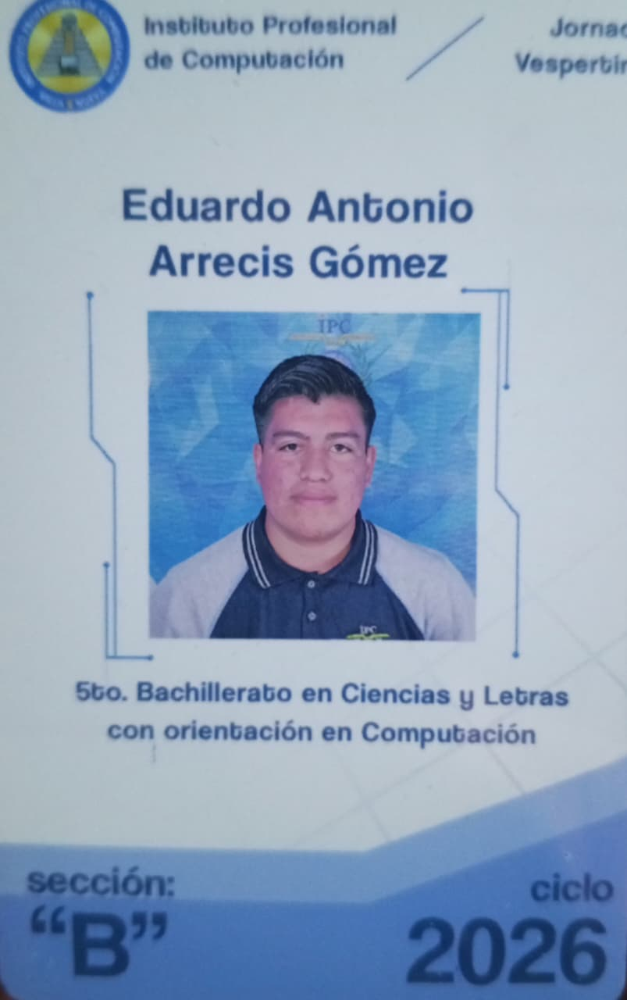

Dirección: Catalina, zona 6 de Villa Nueva, Guatemala
CUI: 4004565080115
Teléfono: 5994-7567
Email: eduardo16@gmail.com
Fecha de nacimiento: 5 de noviembre del 2006
Edad: 19 años
Soy un alumno de educación media con entusiasmo por el mundo de la tecnología, la informática y la programación. Me considero una persona dedicada, ordenada y con gran interés en aprender y superarme cada día.
Actualmente estoy ampliando mis conocimientos en la creación de páginas web utilizando HTML y aprendiendo más sobre programación y el funcionamiento de las computadoras.
Mi meta es continuar mis estudios en una carrera relacionada con la tecnología como sistemas o desarrollo de software para crear proyectos y aportar soluciones tecnológicas.
Carlos Alvarado
Relación: Amigo de mi abuela
Teléfono: +502 3007 1701
Correo: carlos17@gmail.com
Ana Alvarado
Relación: Hija de Carlos Alvarado
Teléfono: +502 5518 9434
Correo: ana15@gmail.com
Josue Hernández
Relación: Compañero de trabajo
Teléfono: +502 4161 5154
Correo: josue10@gmail.com